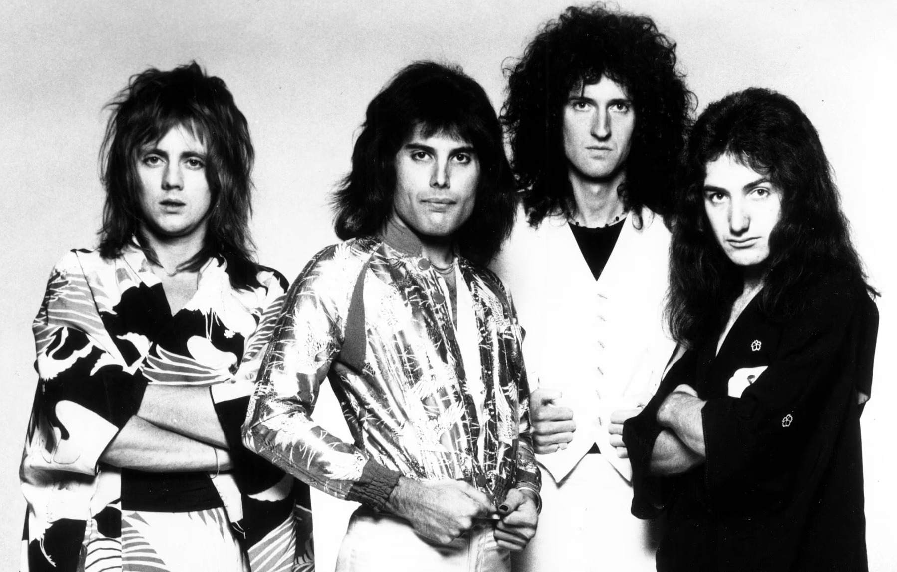
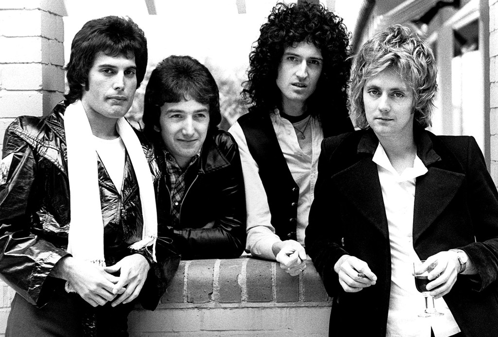

Queen es una banda de rock británica formada en Londres en 1970. La banda se compone de Freddie Mercury (voz principal), Brian May (guitarra), John Deacon (bajo) y Roger Taylor (batería). Queen es conocida por su estilo musical ecléctico. Algunas de sus canciones más famosas incluyen "Bohemian Rhapsody", "We Will Rock You" y "We Are the Champions".



Maluma es un cantante y compositor colombiano, conocido por su estilo de música urbana y sus performances en vivo.

Michael Jackson fue un cantante, compositor y bailarín estadounidense, conocido como el "Rey del Pop".